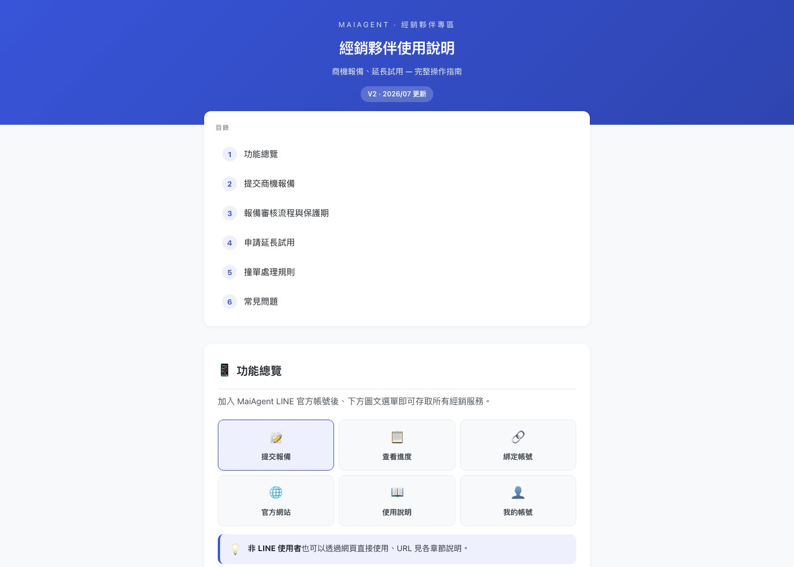
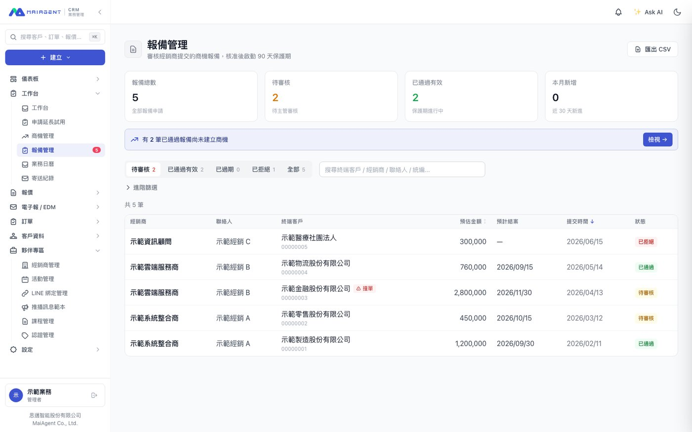
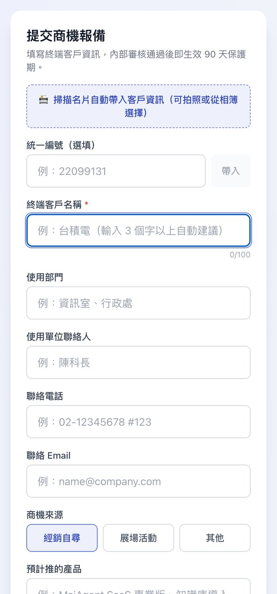
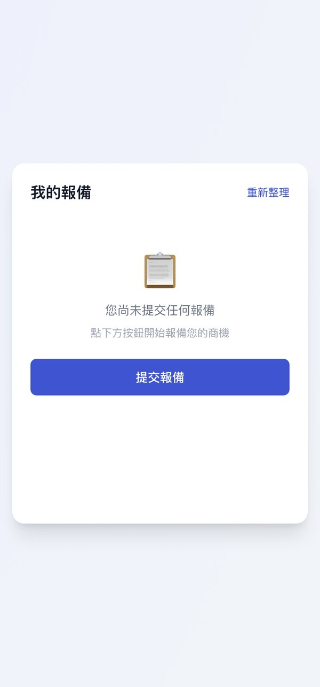
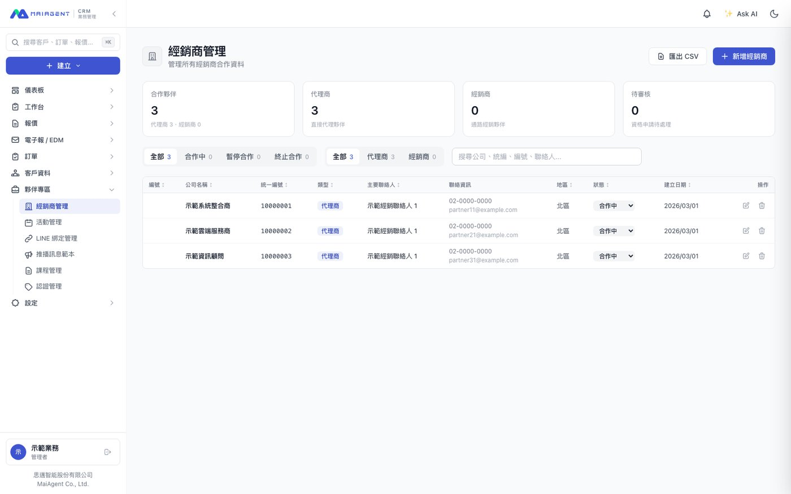
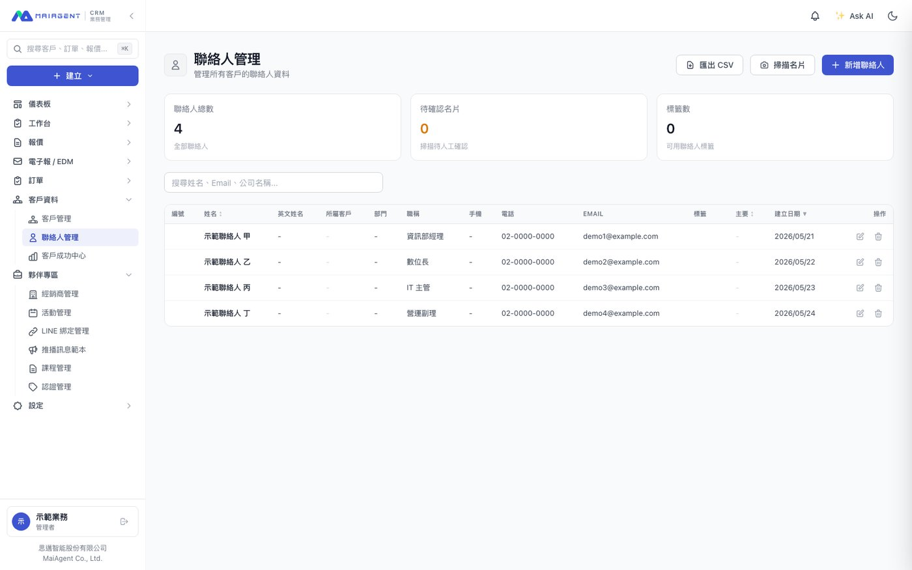
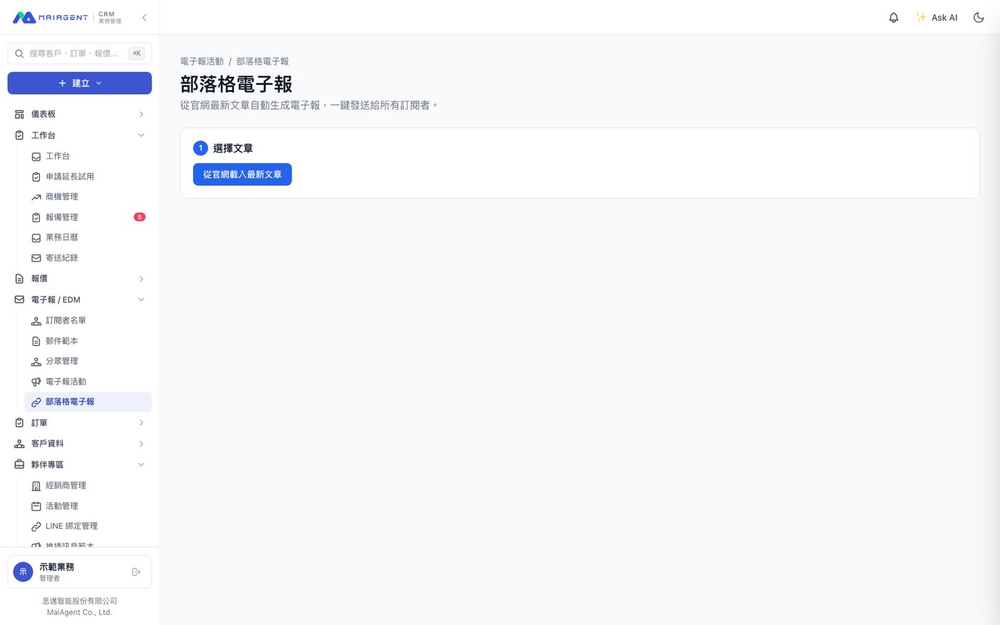

業務團隊每日使用的系統，涵蓋商機、客戶與經銷商通路。此為團隊專案，我負責其中數個模組。
經銷商原本以 email 與電話回報商機，再由業務手動登錄。問題不在流程繁瑣，而在撞單：兩家經銷商接觸同一終端客戶時，誰先報備、保護期是否仍有效，皆無明確依據，最終演變為業務之間的爭議。
將整條流程移至公司 LINE 官方帳號。經銷商可透過圖文選單提交報備、查詢進度與綁定帳號；報備送出時即進行撞單比對，審核通過後自動起算 90 天保護期並於到期前提醒。內部端提供審核列表、撞單標記、轉換商機，以及狀態變更的稽核軌跡。
細部功能包含：輸入統一編號自動帶入公司資料（串接政府開放資料，並建立別名對照表，使公司簡稱亦可查得完整登記名稱）、名片拍照直接帶入、Email OTP 身分驗證，以及提供非 LINE 使用者的網頁版路徑。
最後補上一份經銷商使用說明：功能總覽、報備流程、保護期規則、撞單處理與常見問題。工具若無人知道如何使用，就不會被使用。





行銷與 EDM：訂閱者與標籤管理、GDPR 請求處理、AI 生成郵件樣板、部落格電子報自動化、開信追蹤、培育序列與成效歸因。
名片批次辨識：支援一次上傳多張，自動正規化台灣電話與地址格式，比對重複 Email，查無對應客戶時可於同頁直接建立。
其他：官網名單 webhook（含失敗重試與自動建立工單）、可拖曳的 dashboard、報價轉訂單、全站行動版改版、軟刪除回收桶、訂單交接。
開發以 AI 輔助（Claude Code）進行。

